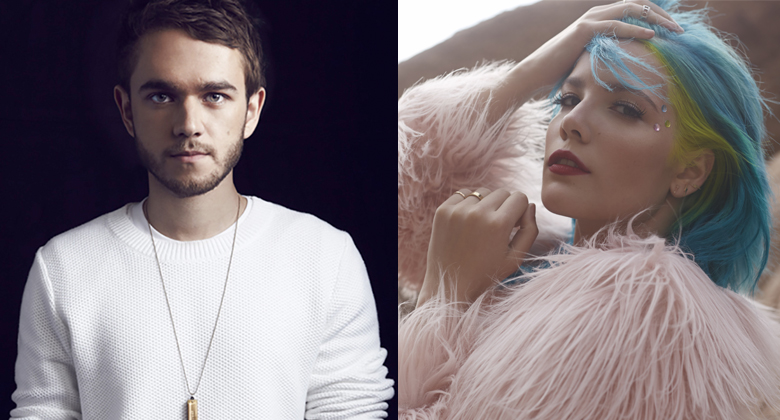
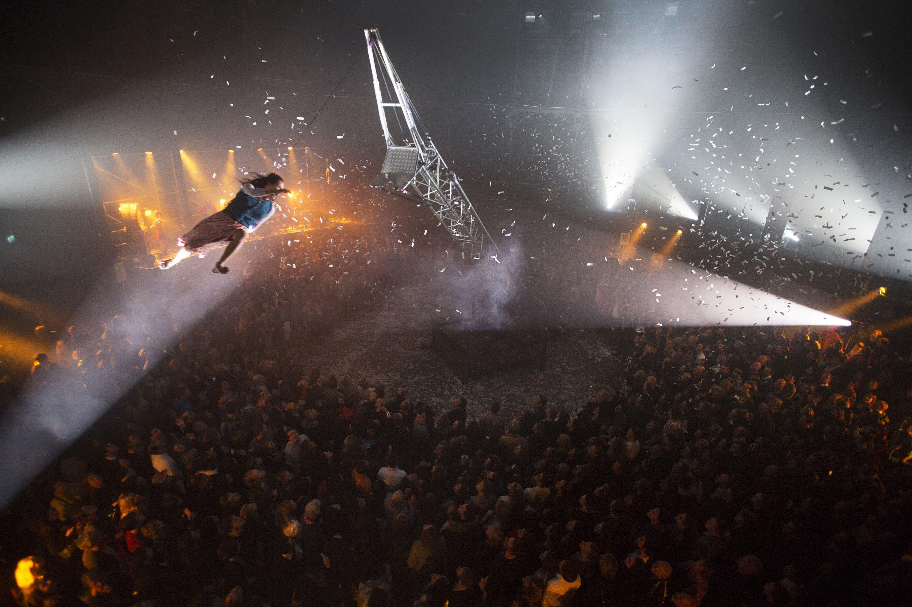
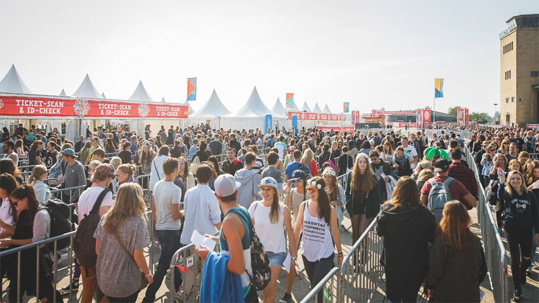

Um dos aspectos mais fascinantes da internet em geral – e das redes sociais em particular – é a facilidade e a velocidade com que criações e parcerias artísticas surgem e se concretizam. E foi ela, a internet, que deu o pontapé inicial para uma colaboração entre Zedd e Halsey, duas atrações do #LollaBR2016.
O DJ e produtor alemão, apaixonado pela voz da jovem cantora norte-americana, convidou-a via Twitter para trabalharem juntos. Ela aceitou e deixou todo mundo na expectativa.
MAIS +

Quem estiver por aqui no Lolla BR 2015, no Autódromo de Interlagos, terá a oportunidade de assistir a um número exclusivo, intitulado : “Flying Crane – Fuerza Bruta”.
Além de muita música boa e ativações incríveis, os fãs do festival ainda terão um gostinho da energia que esta companhia argentina promove com suas apresentações cheias de liberdade e poder explosivo. As performances serão realizadas entre um show e outro nos dias 28 e 29 de março.
MAIS +

O segundo final de semana de setembro de 2015 foi histórico para a capital da Alemanha. Durante dois dias, Berlin recebeu grandes nomes da música mundial na primeira edição do Lollapalooza em território europeu.
O Aeroporto Tempelhof foi tomado por uma animada multidão que curtiu mais de 40 atrações e viveu experiências inesquecíveis nos cinco palcos do festival. Perry Farrell, criador do festival, também marcou presença.
MAIS +